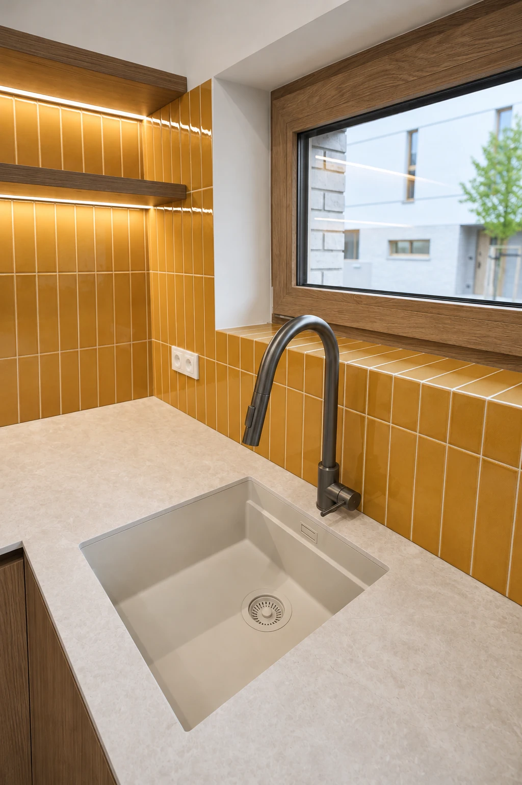
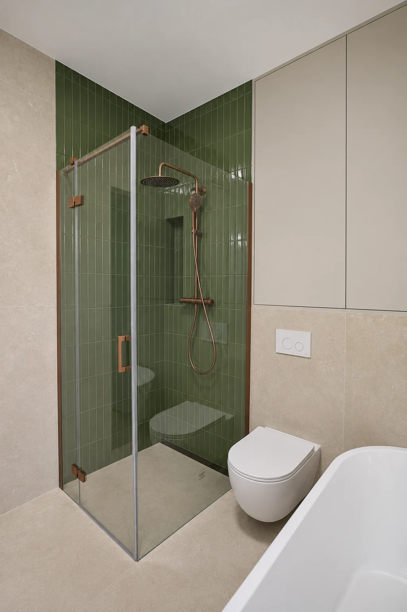
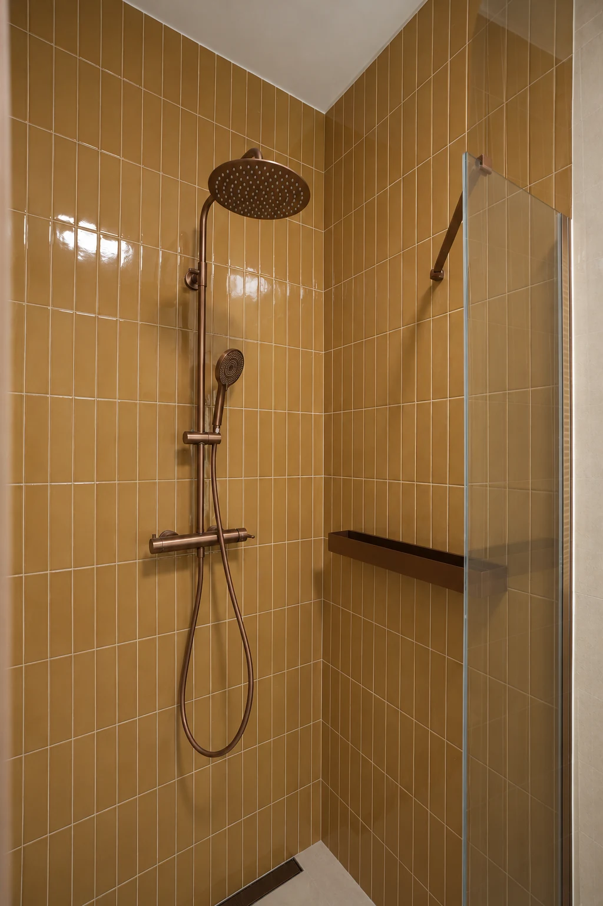
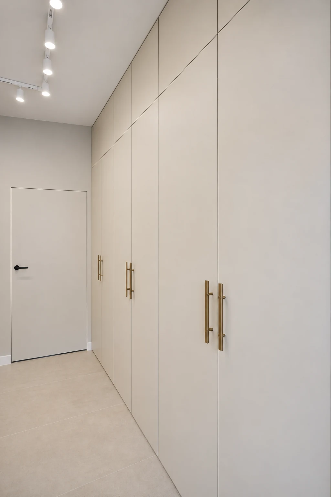
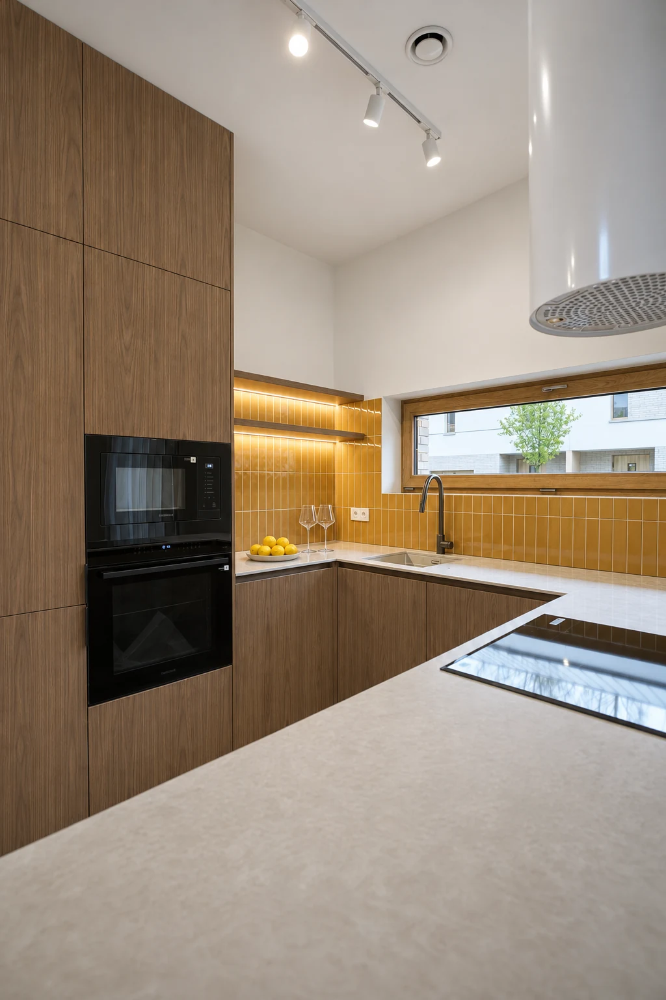
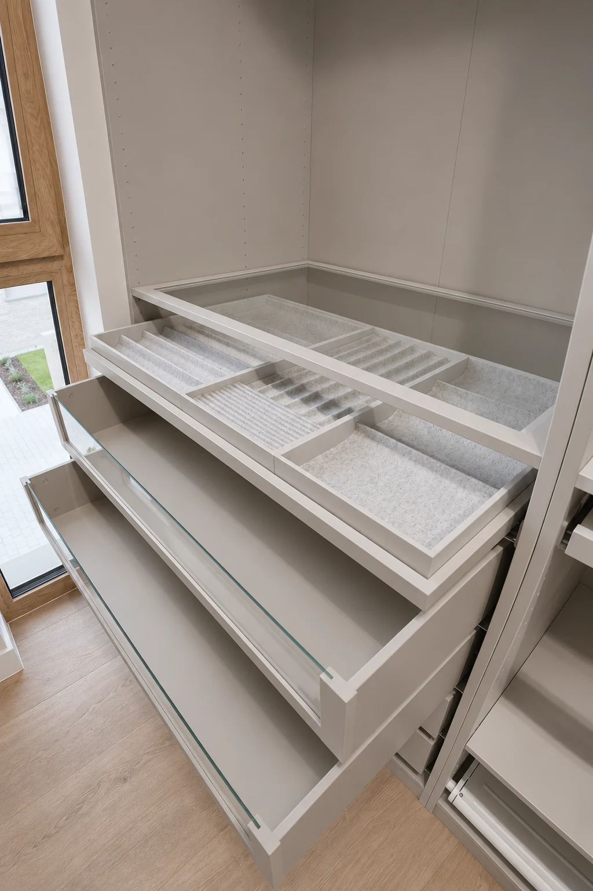
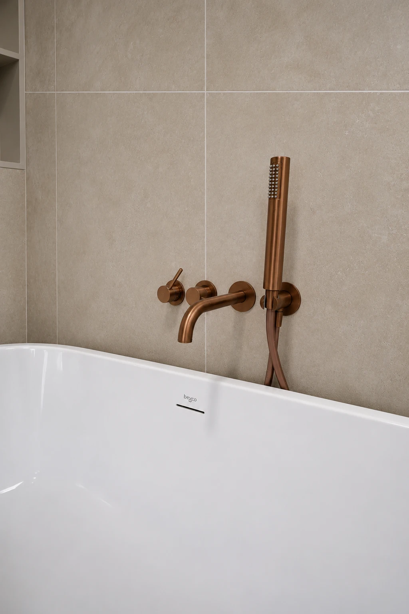

Majdanw detalach
Rysunek drewna, miękka tkanina i smukła linia światła. Już w holu widać motywy, które łączą całe wnętrze.
Rysunek drewna, miękka tkanina i smukła linia światła. Już w holu widać motywy, które łączą całe wnętrze.
PRZEWIŃ I POZNAJ PROJEKT
Poznaj detale ↗MAJDAN · DETALE PROJEKTU
W Majdanie drewno, zieleń i ciepłe odcienie ceramiki powracają w różnych pomieszczeniach. Pionowe podziały, zaokrąglenia i zróżnicowane faktury nadają każdemu z nich własny charakter, zachowując spójność całego domu.

KOLOR
Musztardowe płytki pojawiają się w kuchni i łazience. Ich wąski format i szkliwiona powierzchnia wprowadzają rytm oraz delikatne odbicia światła. Zestawione z drewnem i jasnym blatem dają ciepły, wyrazisty akcent. Powtórzenie ceramiki łączy oba pomieszczenia.
FORMA
Zaokrąglone lustro i owalna umywalka przełamują pionowe podziały płytek. Ryflowanie białej ceramiki powtarza ten kierunek w mniejszej skali. Dzięki temu różne elementy mają wspólny motyw, a obłe kształty łagodzą geometryczny układ ściany.
FAKTURA
W holu oliwkowe siedzisko o pętelkowej fakturze zestawiliśmy z drewnianą konsolą. Miękka tkanina kontrastuje z wyraźnym usłojeniem, a gładkie fronty zabudowy pozostają spokojnym tłem. Podświetlona krawędź lustra podkreśla pionową linię ściany.
NASTRÓJ
W sypialni zieleń obejmuje ściany i sufit, tworząc tło dla tapety z czaplą. Zaokrąglona rama podkreśla jej obrys, a jasny, tapicerowany zagłówek łagodzi mocny wzór. Lampy po obu stronach łóżka doświetlają tę kompozycję i powtarzają motyw obłych form.
MATERIAŁY · ŚWIATŁO · DETALE






WNĘTRZE DOPASOWANE DO CIEBIE